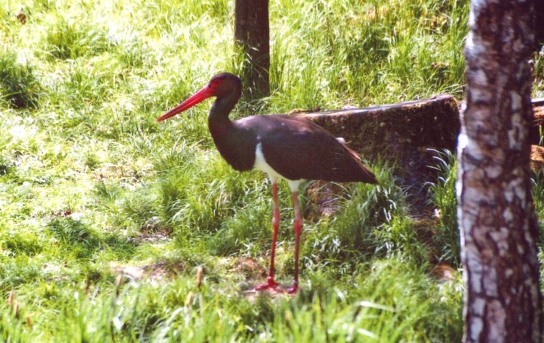

ब्लैक स्टॉर्कBlack Stork
Ciconia nigra · Ciconiidae · BRD-0136

- Scientific nameवैज्ञानिक नाम
- Ciconia nigra (Linnaeus, 1758)
- Familyकुल
- Ciconiidae
- Hindiहिंदी
- ब्लैक स्टॉर्क
- Local namesस्थानीय नाम
- black stork, kala stork, blak stork, stork
- Status hereयहाँ की स्थिति
- native
- Movementआवागमन
- Winter visitor
- IUCNIUCN
- LC
- Reviewसमीक्षा
- audited and independently read
When to look कब देखें
Winter visitorशीतकालीन प्रवासी. Expected mainly in October, November, December, January, February, March, April.मुख्यतः अक्टूबर, नवंबर, दिसंबर, जनवरी, फ़रवरी, मार्च, अप्रैल में अपेक्षित।
Arrives in October–November from breeding grounds in Europe and Central Asia; departs by March–April. Expected on large rivers and wetlands, particularly Parvati Arga. Documented in Parvati Arga and Bakhira surveys. All migrants and visitors →
Tell it apart from इनसे अलग पहचानें
ब्लैक स्टॉर्क / Black Stork
Ciconia nigra (Linnaeus, 1758) — Ciconiidae
ब्लैक स्टॉर्क — यूरोप और मध्य एशिया से सर्दियों में आने वाली एक बड़ी और भव्य चिड़िया। इसके काले पंख, सफेद पेट और लाल पैर इसे तुरंत पहचान देते हैं। पूर्वी उत्तर प्रदेश में यह अक्टूबर से अप्रैल तक बड़ी नदियों, विशेषकर घाघरा और राप्ती नदी के साथ देखी जाती है। यह शिकारी चिड़िया मछली, केकड़े और जलीय जानवरों का शिकार करती है और धीरे-धीरे पानी में टहलते हुए भोजन खोजती है।
Quick Identification त्वरित पहचान
| Feature | Description |
|---|---|
| Size | Large wading bird; 95–105 cm tall |
| Plumage | Black head, neck, back and wings; white belly and undertail-coverts |
| Bill | Long, heavy, straight, bright red |
| Legs | Long, thin, bright red-orange |
| Wings | Black with iridescent green and purple sheen in breeding birds |
| Flight | Slow, heavy wing beats; soars on thermals |
| Behaviour | Solitary or in pairs; wades slowly in water; hunts by stalking |
Field tip: A large black and white stork with bright red bill and legs. The entirely black upperparts and wings, white belly, and red bill distinguish it from all other storks in the region. Wades slowly in shallow water with neck withdrawn, hunting fish.
हिंदी — कैसे पहचानें:
बहुत बड़ी चिड़िया; काले और सफेद रंग।
लाल चोंच; लाल टाँगें।
पानी में धीरे-धीरे टहलता है।
अकेले या जोड़ों में दिखता है।
Morphology आकारिकी
Biometrics:
| Measurement | Range |
|---|---|
| Total length | 950–1050 mm |
| Wingspan | 1900–2150 mm |
| Bill | 100–130 mm |
| Tarsus | 110–140 mm |
| Weight | 2800–3200 g |
Size: 95–105 cm tall; wingspan 1.9–2.15 m. A large wading bird, larger than White Stork but smaller than some eagles.
Plumage: Head, neck, back, and entire upper parts black. Lores and face bare, blackish. Underparts white, extending from breast through belly to undertail-coverts. Wing coverts and flight feathers black with iridescent green and purplish sheen in breeding birds. Tail black.
Bill: Long (100–130 mm), heavy, straight, and bright red in adults; darker in juveniles.
Legs and feet: Long, thin, bright red-orange in adults; paler in juveniles. Toes partially webbed.
Eyes: Dark brown; bare lores and face area.
Sexes: Sexes similar; males slightly larger.
Juveniles: Duller overall; bill and legs greenish-yellow.
Vocalisations. Call repertoire:
- Bill-clattering: A loud, rapid clack-clack-clack made by snapping bill; used in courtship and communication.
- Call: A deep, guttural croak or groan; heard occasionally.
- Silent hunter: Usually silent while hunting.
हिंदी: चोंच को एक-दूसरे से टकराकर तेजी से क्लैक-क्लैक आवाज़ निकालता है। शिकार करते समय चुप रहता है।
Behaviour & Ecology व्यवहार और पारिस्थितिकी
Wading hunter: Black Storks hunt by wading slowly through shallow water, stalking prey with neck withdrawn, then striking rapidly with the bill. They feed on:
- Fish (small to medium-sized)
- Frogs and amphibians
- Crustaceans (crabs, prawns)
- Aquatic insects
- Occasionally small reptiles and rodents
Social behaviour: Solitary or in pairs during winter; males and females roost separately at night, meeting at feeding sites during the day.
Feeding time: Active throughout the day, particularly in early morning and late afternoon.
Roost behaviour: Nocturnal roosting on branches of tall trees near water; perches high to survey surroundings.
Predators: Peregrine Falcon may take young birds. Chicks vulnerable in nest.
Migration: Highly migratory; moves with water availability and food sources. Winter flocks are rare; usually solitary.
हिंदी: पानी में धीरे-धीरे टहलते हुए शिकार करता है। अकेले या जोड़ों में रहता है। पेड़ों पर सोता है।
Life Cycle / Phenology जीवन चक्र
Winter visitor: Breeds in Europe and Central Asia (April–September); absent during breeding season. Returns to eastern UP from October and remains through April.
Arrival and departure: First birds arrive in October; peak numbers in January–February; most depart by March–April.
Courtship: Takes place on breeding grounds. Males perform bill-clattering displays and ritualized dances.
Moult: Complete moult occurs before migration. Non-breeding plumage acquired and worn throughout wintering.
Site fidelity: Some individuals return to the same wintering sites year after year.
हिंदी: अक्टूबर में आता है, अप्रैल तक रहता है। यूरोप में प्रजनन करता है। सर्दियों में अकेले या जोड़ों में रहता है।
Host Plants or Prey आहार
| Food Type | Examples | Feeding Behaviour |
|---|---|---|
| Fish | Catfish, carp, barbs | Stalked in shallow water; speared with bill |
| Amphibians | Frogs, tadpoles | Hunted in wetlands |
| Crustaceans | Crabs, prawns, shrimp | Picked from water and mud |
| Aquatic insects | Dragonfly nymphs, water beetles | Occasionally picked from surface |
| Small reptiles | Snakes, lizards | Hunted opportunistically |
हिंदी: मछली, मेंढक और केकड़े खाता है। पानी में खड़े होकर शिकार करता है।
Predators / Natural Enemies शत्रु
- Avian predators: Peregrine Falcon (young birds)
- Mammalian predators: Wild boar, jackal (young in nest)
- Parasites: Feather parasites, blood parasites
हिंदी: बड़ी शिकारी चिड़ियाँ इसका शिकार कर सकती हैं। अंडों को जानवर खा सकते हैं।
Agricultural / Human Relevance कृषि प्रासंगिकता
Protected species: The Black Stork is protected under the Wildlife (Protection) Act 1972 (Schedule I, amended 2022). Hunting is illegal in India.
Fish predator: As a piscivore in wintering grounds, the Black Stork may consume fish from ponds and reservoirs used for aquaculture, but the impact is generally negligible on wild populations due to the solitary nature of the birds.
Indicator of water quality: As a large piscivore, the Black Stork indicates the presence of healthy fish populations and, by extension, reasonably clean water bodies.
Habitat requirement: Depends on large, undisturbed water bodies with tall trees for roosting.
Historical records: Mentioned in Mughal hunting records as a game bird; no longer hunted.
Cultural value: Recognized by birdwatchers as a rare and charismatic winter visitor.
हिंदी: कानून से पूरी तरह सुरक्षित है। इसका शिकार करना कानूनी रूप से निषिद्ध है।
Expected Locally स्थानीय रूप से अपेक्षित
Not a field record. Written from published accounts for eastern Uttar Pradesh. No confirmed local sighting yet — if you have seen it, that is what the atlas needs.
अभी तक स्थानीय पुष्टि नहीं। यह विवरण प्रकाशित स्रोतों से है, किसी अवलोकन से नहीं।
Winter range: Expected in eastern Uttar Pradesh from October to April on large rivers and wetlands. Documented in Parvati Arga Bird Sanctuary and Bakhira Bird Sanctuary surveys.
Habitat preference: Large, deep water bodies with tall trees for roosting. River systems like the Ghaghra and Rapti are preferred.
Peak occurrence: January–February, when populations from European and Central Asian breeding grounds have moved south.
Nearest published record: Recorded in Parvati Arga Bird Sanctuary by Yashmita-Ulman & Singh (2025) and in Bakhira Bird Sanctuary by Mishra et al. (2019).
What a first record would be: A dated photograph showing the bird clearly in a river or large wetland in a specific location (with GPS coordinates and date) submitted through the About page of this atlas. The large size, black and white plumage, and red bill and legs are diagnostic.
हिंदी: यह पक्षी स्थानीय रूप से अपेक्षित है, न कि देखे गए बतौर प्रेक्षण। अक्टूबर से अप्रैल तक बड़ी नदियों पर देखे जा सकते हैं। पहला रिकॉर्ड के लिए स्पष्ट फोटोग्राफ चाहिए।
Distribution वितरण
Global range: Breeds from eastern Europe to Japan in Central Asia. Winters across Africa, Middle East, and Asia. Monotypic species.
In India: Distributed as a winter visitor on large rivers and wetlands, particularly in northern and eastern India.
In Uttar Pradesh: Winter visitor to the Ganga and its tributaries, particularly the Ghaghra and Rapti rivers.
In Basti district / eastern UP: Regular winter visitor to Parvati Arga Bird Sanctuary and Bakhira Bird Sanctuary areas, documented in published surveys.
Research Questions शोध प्रश्न
- What are the precise breeding grounds and migration routes of the Black Stork populations that winter in eastern UP?
- क्या इस चिड़िया की सर्दियों की जगहें साल दर साल एक जैसी रहती हैं?
- How does the diet composition of Black Stork vary with fish availability in different water bodies throughout the winter season?
- What is the population trend of Black Stork in the Ghaghra-Rapti river system over the last two decades?
- क्या बाँधों और जलविद्युत परियोजनाओं से इस चिड़िया के आवास में कमी आई है? (A child can monitor water levels and stork presence at the same site through the season.)
- How do water-level management regimes in reservoirs affect the foraging success and population of wintering Black Storks?
Similar Species मिलती-जुलती प्रजातियाँ
| Species | Key Difference | Hindi | Field Rule |
|---|---|---|---|
| White Stork (Ciconia ciconia) | Vagrant; larger; white body with black flight feathers and tail; black and red bill | सफेद सारस | White Stork has a white body with black flight feathers, not all-black upperparts. Rare vagrant to India. |
Field rule: Black Stork is distinguished by its entirely black upperparts, white belly, bright red bill and legs, and solitary hunting behaviour in shallow water. The iridescent green sheen on black feathers (in breeding birds) is also distinctive.
Taxonomy & Classification वर्गीकरण
Original description. The species was described by Carl Linnaeus in 1758 in the Systema Naturae (10th edition), as Ardea nigra. Later moved to the genus Ciconia.
Subspecies. Monotypic — no subspecies are currently recognised.
Family and order placement. Order Ciconiiformes; family Ciconiidae (storks). The genus Ciconia contains several large storks distributed across Europe, Africa, and Asia.
Phylogenetic notes. Closely related to White Stork (C. ciconia); the two species form a sister pair within the genus Ciconia.
IUCN status rationale. The species is assessed as Least Concern (LC) globally. Populations are stable and widely distributed. Adaptable to various aquatic habitats. In India, protected under the Wildlife Protection Act 1972 (Schedule I).
हिंदी: विश्वभर में पाया जाता है। भारत में सर्दियों में आता है। कानून से सुरक्षित है।
Photo Gallery फोटो गैलरी
No photos yet — add field photos to media/species/black_stork/ and run node scripts/sync_photos.js.
Wanted photos:
- Wading in shallow water
- Roosting in tall tree
- In flight showing wing pattern
- Hunting posture with neck withdrawn
- Detail of head and bill
References संदर्भ
- Linnaeus, C. (1758). Systema Naturae per Regna Tria Naturae (10th edn). Laurentii Salvii, Holmiae. Vol. 1.
- Ali, S. & Ripley, S. D. (1968). Handbook of the Birds of India and Pakistan. Vol. 1 (Divers to Hawks). Oxford University Press, Delhi. Pp. 56–58.
- Grimmett, R., Inskipp, C. & Inskipp, T. (2011). Birds of the Indian Subcontinent (2nd edn). Oxford University Press, Delhi. Pp. 91–92.
- Cramp, S. & Simmons, K. E. L. (1977). Handbook of the Birds of Europe, the Middle East and North Africa: The Birds of the Western Palearctic. Vol. 1 (Ostrich to Ducks). Oxford University Press. Pp. 117–121.
- Mishra, H., Kumar, V. & Kumar, A. (2019). Population structure and habitat utilization of migratory birds at Bakhira Bird Sanctuary, Uttar Pradesh, India. Pakistan Journal of Zoology 52(1): 247–254.
- Yashmita-Ulman & Singh, M. (2025). A preliminary assessment of avifaunal diversity in Parwati Arga Bird Sanctuary, Uttar Pradesh, India. Journal of Threatened Taxa 17(11): 27976–27984.
Source file: species/fauna/birds/black_stork.md